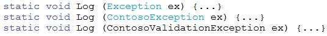
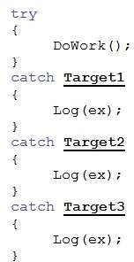
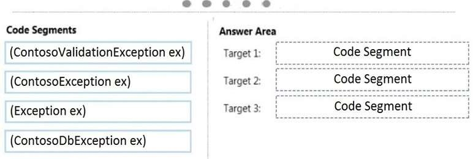
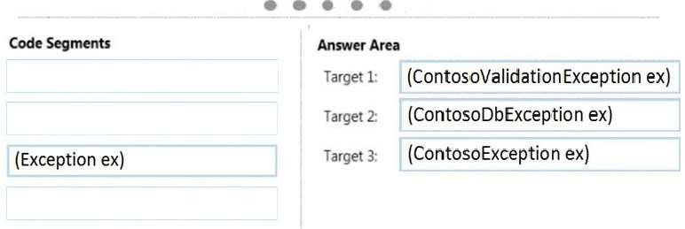

|
DRAG DROP You are developing an application that implements a set of custom exception types. You declare the custom exception types by using the following code segments: The application includes a function named DoWork that throws .NET Framework exceptions and custom exceptions. The application contains only the following logging methods:  The application must meet the following requirements:
You need to meet the requirements. You have the following code:  Which code segments should you include in Target 1, Target 2 and Target 3 to complete the code? (To answer, drag the appropriate code segments to the correct targets in the answer area. Each code segment may be used once, more than once, or not at all. You may need to drag the split bar between panes or scroll to view content.) Select and Place:  Correct Answer:  Section: Volume B Explanation Explanation/Reference: Catch the most specific exception first. ExplicaciónRespuesta:Mostrando de manera visual la respuesta:Fuentes: |